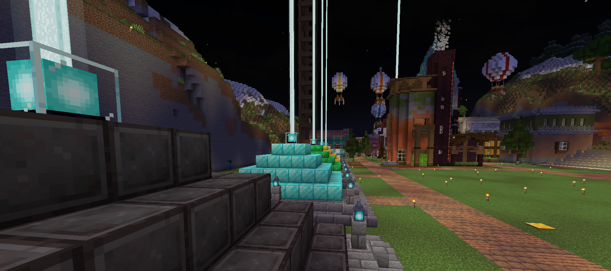

MC-Start
Late Game
-Why-
The supposed “end” of minecraft is beating the ender dragon. That's mainly due to the dimension the boss is in, which is literally called “The end”. Not to mention When exiting this dimension for the first time the game's credits play. Although, just because you beat the enderdragon and the credits play. The world has only just begun. Minecraft as a game has a beautiful game play loop. By just beating the ender dragon you unlock the entirety of the end, meaning elytra, shulker-boxes, etc. Which become vital for end game exploration and storage. When discovering or interacting with any other structure or dimension in minecraft. The game offers tools to not get to the next objective marker. Although, it's to allow you to do something you couldn't beforehand. Like a swift sneak from an ancient city, that can help make building easier. How does this relate to anything to this website? Well, it really comes down to how you approach your builds, farms, and other aspirations within the game. Why are you doing it? Why did you beat the ender dragon? How does this benefit your world? Why did you fight the wither? Do you need a beacon? What do you need the beacon for? Again minecrafts a Sandbox game that doesn't directly give you all the tools and all the resources. The game has endless opportunities to make what you wish for.

-Things To Do-
Your world is a piece of clay that can be modeled and redefined. Manny people, especially when they hit the end game of minecraft: Create larger than life projects. Now you could do this and I do encourage it. Although, when a project gets tiring don't just give up on it. Find a benchmark and then take a break from it. By at least finishing a part of that aspiration. It inspires an individual to then come back to the project.